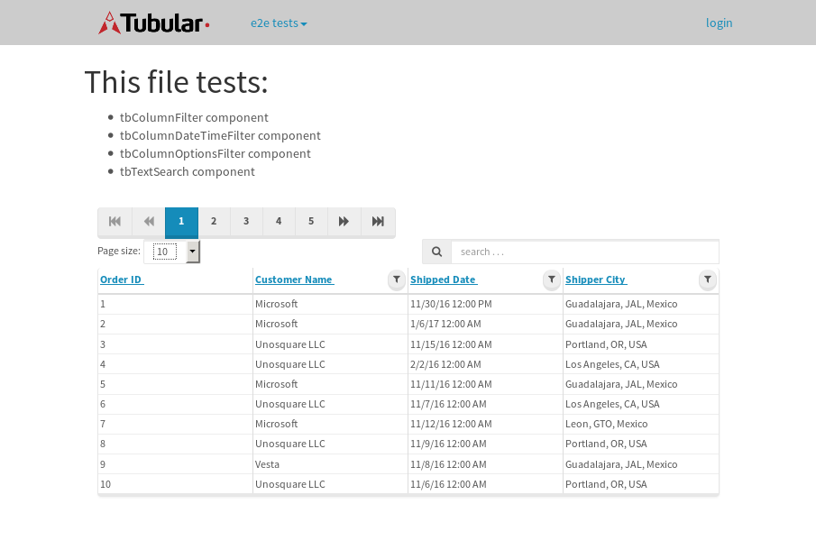
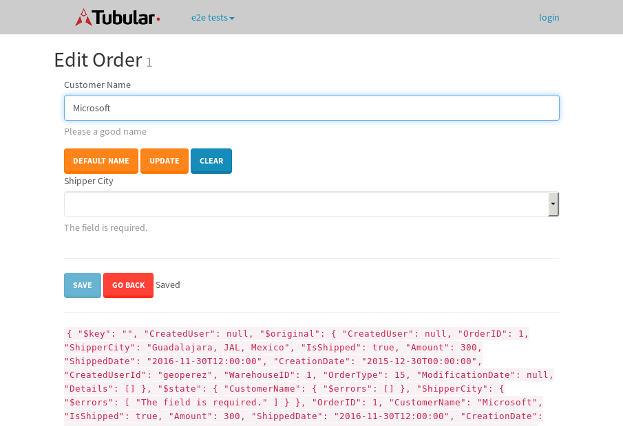

tbColumn.Grid Sorting - 30.876sTests: 5Skipped: 0Failures: 0 should sort data in ascending order then on descending order when sorting by Order Id column - 6.591sTests passed: 100.00%should order data in ascending order when click-sorting an unsorted text column - 6.472sTests passed: 100.00%should order data in descending order when click-sorting an ascending-sorted text column - 6.235sTests passed: 100.00%should order data in ascending order when click-sorting an unsorted date column - 5.383sTests passed: 100.00%should order data in descending order when click-sorting twice an unsorted date column - 6.193sTests passed: 100.00%
tbColumn.Grid Components - 3.832sTests: 3Skipped: 0Failures: 0 should print grid - 1.422s***Skipped***Tests passed: 0%should export grid - 1.135s***Skipped***Tests passed: 0%should show column selector - 1.275sTests passed: 100.00%
tbSingleForm.Form validations - 2.876sTests: 2Skipped: 0Failures: 0 should have an empty required field - 1.508sTests passed: 100.00%should not be able to click on save - 1.368sTests passed: 100.00%
Tubular Filters.tbColumnFilter - 111.826sTests: 12Skipped: 0Failures: 0 should cancel filtering when clicking outside filter-popover - 9.828sTests passed: 100.00%should disable Value text-input for "None" filter - 6.668sTests passed: 100.00%should disable apply button for "None" filter - 6.751sTests passed: 100.00%should decorate popover button when showing data is being filtered for its column - 12.261sTests passed: 100.00%should correctly filter data for the "Equals" filtering option - 8.822sTests passed: 100.00%should correctly filter data for the "Not Equals" filtering option - 9.097sTests passed: 100.00%should correctly filter data for the "Contains" filtering option - 8.88sTests passed: 100.00%should correctly filter data for the "Not Contains" filtering option - 8.98sTests passed: 100.00%should correctly filter data for the "Starts With" filtering option - 7.024sTests passed: 100.00%should correctly filter data for the "Not Starts With" filtering option - 7.974sTests passed: 100.00%should correctly filter data for the "Ends With" filtering option - 6.932sTests passed: 100.00%should correctly filter data for the "Not Ends With" filtering option - 7.209sTests passed: 100.00%
Tubular Filters.tbColumnDateTimeFilter - 140.116sTests: 12Skipped: 0Failures: 0 should cancel filtering when clicking outside filter-popover - 7.693sTests passed: 100.00%should disable Value text-input for "None" filter - 6.554sTests passed: 100.00%should disable apply button for "None" filter - 6.836sTests passed: 100.00%should clear filtering when clicking on Clean button - 17.995sTests passed: 100.00%should decorate popover button when showing data is being filtered for its column - 12.089sTests passed: 100.00%should correctly filter data for the "Equals" filtering option - 7.339sTests passed: 100.00%should correctly filter data for the "Not Equals" filtering option - 7.586sTests passed: 100.00%should correctly filter data for the "Between" filtering option - 12.848sTests passed: 100.00%should correctly filter data for the "Greater-or-equal" filtering option - 12.9sTests passed: 100.00%should corretlly filter data for the "Greater" filtering option - 12.921sTests passed: 100.00%should correctly filter data for the "Less-or-equal" filtering option - 12.005sTests passed: 100.00%should correctly filter data for the "Less" filtering option - 11.8sTests passed: 100.00%
Tubular Filters.tbColumnOptionsFilter - 85.073sTests: 3Skipped: 0Failures: 0 should cancel filtering when clicking outside filter-popover - 9.737sTests passed: 100.00%should decorate popover button when showing data is being filtered for its column - 12.226sTests passed: 100.00%should filter column-elements in accordance to the selected filter when selecting a single option - 51.379sTests passed: 100.00%
Tubular Filters.tbTextSearch - 51.645sTests: 5Skipped: 0Failures: 1 min-chars is not set - 1.095sTests passed: 100.00%should filter data in searchable-column customer name to matching inputted text, starting from 3 characters - 7.437sTests passed: 100.00%should filter data in searchable-column shipper city to matching inputted text, starting from 3 characters - 13.312sTests passed: 100.00%should show clear button when there is inputted text only - 6.99sTests passed: 100.00%should clear filtering when clicking clear button - 17.08sExpected 10 not to be 10.✗Tests passed: 0.00%
tbForm related components.tbCheckboxField - 7.878sTests: 2Skipped: 0Failures: 0 should save changes on "SAVE" - 3.539sTests passed: 100.00%should discard changes on "CANCEL" - 2.518sTests passed: 100.00%
tbForm related components.tbDropDownEditor - 13.621sTests: 5Skipped: 0Failures: 0 should set initial input value to the value of "value" attribute when defined - 2.021sTests passed: 100.00%should show the component name value in a label field when "showLabel" attribute is true - 2.02sTests passed: 100.00%should show a help field equal to this attribute, is present - 2.417sTests passed: 100.00%should submit modifications to item/server when clicking form "Save" - 3.328sTests passed: 100.00%should NOT submit modifications to item/server when clicking form "Cancel" - 2.906sTests passed: 100.00%
tbForm related components.tbTextArea - 18.484sTests: 7Skipped: 0Failures: 0 should set initial input value to the value of "value" attribute when defined - 1.962sTests passed: 100.00%should be invalidated when the number of chars is not in the range of "min" and "max" attributes - 2.326sTests passed: 100.00%should show the component name value in a label field when "showLabel" attribute is true - 2.247sTests passed: 100.00%should show a help field equal to this attribute, is present - 2.205sTests passed: 100.00%should require the field when the attribute "required" is true - 2.137sTests passed: 100.00%should submit modifications to item/server when clicking form "Save" - 3.667sTests passed: 100.00%should NOT submit modifications to item/server when clicking form "Cancel" - 2.938sTests passed: 100.00%
tbForm related components.tbDateEditor - 19.015sTests: 6Skipped: 0Failures: 4 should set initial date value to the value of "value" attribute when defined - 2.513sExpected false to be true.✗Tests passed: 0.00%should be invalidated when the date is not in the range of "min" and "max" attributes - 3.434sExpected false to be true.✗Expected 1 to be less than 1.✗Tests passed: 33.33%should show the component name value in a label field when "showLabel" attribute is true - 2.636sTests passed: 100.00%should show a help field equal to this attribute, is present - 2.237sTests passed: 100.00%should submit modifications to item/server when clicking form "Save" - 3.76sExpected false to be true.✗Tests passed: 0.00%should NOT submit modifications to item/server when clicking form "Cancel" - 2.718sExpected false to be true.✗Tests passed: 0.00%
tbForm related components.tbTypeaheadEditor - 20.436sTests: 7Skipped: 0Failures: 1 should show an options list when there is an API-info/component entered-data - 3.036sTests passed: 100.00%should select the option clicked - 2.179sTests passed: 100.00%should show a "delete" button when an option/match is selected, and delete the option if button is clicked - 2.367sFailed: each key must be a number of string; got boolean✗Tests passed: 50.00%should show a label value equal to the component name when "showLabel" attribue is true - 2.344sTests passed: 100.00%should require a value when "require" attribute is true - 2.914sTests passed: 100.00%should submit modifications to item/server when clicking form "Save" - 4.455sTests passed: 100.00%should NOT submit modifications to item/server when clicking form "Cancel" - 2.287sTests passed: 100.00%
tbForm related components.tbSimpleEditor - 23.388sTests: 9Skipped: 0Failures: 1 should set initial input value to the value of "value" attribute when defined - 1.845sTests passed: 100.00%should be invalidated when the number of chars is not in the range of "min" and "max" attributes - 2.992sTests passed: 100.00%should show the component name value in a label field when "showLabel" attribute is true - 1.86sTests passed: 100.00%should set input placeholder to the value of "placeholder" attribute - 2.206sTests passed: 100.00%should validate the control using the "regex" attribute, if present - 2.628sFailed: each key must be a number of string; got function✗Tests passed: 0.00%should show a help field equal to this attribute, is present - 1.881sTests passed: 100.00%should require the field when the attribute "required" is true - 2.414sTests passed: 100.00%should submit modifications to item/server when clicking form "Save" - 4.001sTests passed: 100.00%should NOT submit modifications to item/server when clicking form "Cancel" - 2.733sTests passed: 100.00%
tbForm related components.tbNumericEditor - 20.587sTests: 7Skipped: 0Failures: 0 should set initial component value to the value of "value" attribute when defined - 1.861sTests passed: 100.00%should be invalidated when the entered number is not in the range of "min" and "max" attributes - 3.048sTests passed: 100.00%should show the component name value in a label field when "showLabel" attribute is true - 2.277sTests passed: 100.00%should show a help field equal to this attribute, is present - 1.856sTests passed: 100.00%should require the field when the attribute "required" is true - 2.974sTests passed: 100.00%should submit modifications to item/server when clicking form "Save" - 3.933sTests passed: 100.00%should NOT submit modifications to item/server when clicking form "Cancel" - 3.536sTests passed: 100.00%
tbForm Connection Error - 2.557sTests: 1Skipped: 0Failures: 0 tbForm connection error functionality - 0.438sTests passed: 100.00%
tbForm Connection Error - 2.523sTests: 1Skipped: 0Failures: 0 tbForm connection error functionality - 0.533sTests passed: 100.00%
tbForm Connection Error - 3.588sTests: 1Skipped: 0Failures: 1 tbForm connection error functionality - 0.393sExpected '' to equal 'No data found'.✗Tests passed: 0.00%
tb Form Date Editor.tbDateEditor - 19.438sTests: 6Skipped: 0Failures: 0 should set initial date value to the value of "value" attribute when defined - 2.572sTests passed: 100.00%should be invalidated when the date is not in the range of "min" and "max" attributes - 3.245sTests passed: 100.00%should show the component name value in a label field when "showLabel" attribute is true - 2.261sTests passed: 100.00%should show a help field equal to this attribute, is present - 1.955sTests passed: 100.00%should submit modifications to item/server when clicking form "Save" - 3.904sTests passed: 100.00%should NOT submit modifications to item/server when clicking form "Cancel" - 3.329sTests passed: 100.00%
tbGridComponents - 9.4sTests: 6Skipped: 0Failures: 0 should add item with newRow method - 2.801sTests passed: 100.00%should add item with newRow method and cancel action - 0.783sTests passed: 100.00%should update item with tbSaveButton - 1.226sTests passed: 100.00%should update item with tbSaveButton and cancel action - 0.968sTests passed: 100.00%should remove item with tbRemoveButton - 0.999sTests passed: 100.00%should remove item with tbRemoveButton and cancel action - 0.995sTests passed: 100.00%
tbGridPager.navigation buttons - 9.11sTests: 1Skipped: 0Failures: 0 should perform no action when clicking on the numbered navigation button corresponding to the current-showing results page - 2.076sTests passed: 100.00%
tbGridPager.navigation buttons.first/non-last results page related functionallity - 3.698sTests: 2Skipped: 0Failures: 0 should disable "first" and "previous" navigation buttons when in first results page - 1.548sTests passed: 100.00%should enable "last" and "next" navigation buttons when in a results page other than last - 2.15sTests passed: 100.00%
tbGridPager.navigation buttons.last/non-first results page related functionallity - 3.334sTests: 2Skipped: 0Failures: 0 should disable "last" and "next" navigation buttons when in last results page - 1.696sTests passed: 100.00%should enable "first" and "previous" navigation buttons when in a results page other than first - 1.637sTests passed: 100.00%
tbGridPager.page navigation - 6.857sTests: 5Skipped: 0Failures: 0 should go to next results page when clicking on next navigation button - 1.609sTests passed: 100.00%should go to previous results page when clicking on previous navigation button - 1.515sTests passed: 100.00%should go to last results page when clicking on last navigation button - 1.076sTests passed: 100.00%should go to first results page when clicking on first navigation button - 1.216sTests passed: 100.00%should go to corresponding results page when clicking on a numbered navigation button - 1.441sTests passed: 100.00%
tbGridPagerInfo - 5.265sTests: 2Skipped: 0Failures: 0 should show text in accordance to numbered of filter rows and current results-page - 1.656sTests passed: 100.00%should show count in footer - 0.548sTests passed: 100.00%
tbHttp - 23.7sTests: 8Skipped: 0Failures: 0 should be authenticated - 2.771sTests passed: 100.00%retrieve data - 2.36sTests passed: 100.00%should not login bad credentials - 2.339sTests passed: 100.00%should have a refresh token - 4.965sTests passed: 100.00%should remove authentication - 2.377sTests passed: 100.00%get method-Is not authenticated - 3.016sTests passed: 100.00%post method-Is not authenticated - 2.954sTests passed: 100.00%should regenerate access token on post - 2.918sTests passed: 100.00%
LocalData.Grid Local Data Sorting - 9.259sTests: 4Skipped: 0Failures: 1 should order data in ascending order when click-sorting an unsorted text column - 2.788sTests passed: 100.00%should order data in descending order when click-sorting an ascending-sorted text column - 2.792sTests passed: 100.00%should correctly filter data for the "Contains" filtering option - 1.741sFailed: Element is not enabled✗Tests passed: 0.00%should correctly filter data for the "Contains" with ENTER key - 1.936sTests passed: 100.00%
OData.Grid OData Sorting - 46.291sTests: 7Skipped: 0Failures: 1 should order data in ascending order when click-sorting an unsorted numeric column - 7.052sTests passed: 100.00%should order data in descending order when click-sorting an ascending-sorted numeric column - 6.982sTests passed: 100.00%should order data in ascending order when click-sorting an unsorted text column - 4.654sTests passed: 100.00%should order data in descending order when click-sorting an ascending-sorted text column - 6.037sTests passed: 100.00%should order data in ascending order when click-sorting an unsorted date column - 8.273sTests passed: 100.00%should order data in descending order when click-sorting an ascending-sorted date column - 7.004sTests passed: 100.00%should correctly filter data for the "Contains" filtering option - 6.288sFailed: Element is not enabled✗Tests passed: 0.00%
tbPageSizeSelctor - 22.333sTests: 4Skipped: 0Failures: 0 should filter up to 10 data rows per page when selecting a page size of "10" - 3.561sTests passed: 100.00%should filter up to 20 data rows per page when selecting a page size of "20" - 3.204sTests passed: 100.00%should filter up to 50 data rows per page when selecting a page size of "50" - 6.548sTests passed: 100.00%should filter up to 100 data rows per page when selecting a page size of "100" - 7.309sTests passed: 100.00%
tbRowSelectable - 14.897sTests: 2Skipped: 0Failures: 0 selected rows - 8.618sTests passed: 100.00%unselected rows - 4.71sTests passed: 100.00%
tbSingleForm.Form fields - 15.801sTests: 7Skipped: 0Failures: 1 should load correct info - 1.138sTests passed: 100.00%should change customer name - 0.999sTests passed: 100.00%should save it - 3.829sFailed: Element is not enabled✗Tests passed: 0.00%should clear the inputs - 1.023sTests passed: 100.00%should update - 1.562sTests passed: 100.00%should reset editor - 4.394sTests passed: 100.00%should not save if not Changes - 2.855sTests passed: 100.00%
tbSingleForm.Form validations - 2.975sTests: 2Skipped: 0Failures: 0 should load correct info - 1.191sTests passed: 100.00%should not be able to click on save - 1.784sTests passed: 100.00%
tubularTemplateServiceModule.#createColumns() - 1.642sTests: 2Skipped: 0Failures: 0 should return an array with 7 elements - 0.833sTests passed: 100.00%first element should match - 0.809sTests passed: 100.00%
tubularTemplateServiceModule.#generateFieldsArray() - 2.086sTests: 2Skipped: 0Failures: 0 should return an array with 7 elements - 1.091sTests passed: 100.00%first element should match - 0.995sTests passed: 100.00%
tubularTemplateServiceModule.#generatePopup() - 1.052sTests: 1Skipped: 0Failures: 0 should html match - 1.051sTests passed: 100.00%
tubularTemplateServiceModule.#getEditorTypeByDateType() - 3.914sTests: 4Skipped: 0Failures: 0 should be tbDateTimeEditor - 1.115sTests passed: 100.00%should be tbNumericEditor - 0.833sTests passed: 100.00%should be tbCheckboxField - 1.057sTests passed: 100.00%should be tbSimpleEditor - 0.908sTests passed: 100.00%
tubularTemplateServiceModule.#generateForm() - 4.016sTests: 3Skipped: 0Failures: 0 should single layout html match - 1.481sTests passed: 100.00%should two columns layout html match - 1.763sTests passed: 100.00%should three columns layout html match - 0.772sTests passed: 100.00%
tubularTemplateServiceModule.#generateCells() - 0.857sTests: 1Skipped: 0Failures: 0 should html match - 0.856sTests passed: 100.00%
tubularTemplateServiceModule.#generateGrid() - 0.816sTests: 1Skipped: 0Failures: 0 should html match - 0.816sTests passed: 100.00%


{kind=link}
{kind=link}